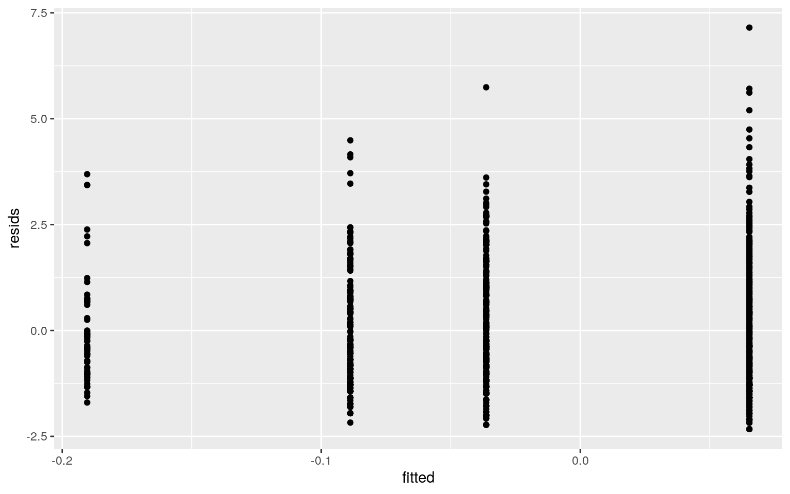

library(tidyverse)
library(dplyr)
medicaid <- read.csv("Medicaid1986.csv")The dataset I am using includes data on those enrolled in Medicaid in 1986. There are 18 total variables describing the data, but I have chosen to only use 6. Ethnicity is a binary categorical variable, the two options are either "cauc" (caucasion) or "other". School is a numerical variable, and tells the number of years of school completed ranging from 0 to 18. Income is also a numerical variable and tells the annual household income. Health is a numerical variable and is a value ranging from -2.264 to 7.217. Access is a binary numeric variable and tells us the availability of health services, with 0 being low access and 1 being high access. Lastly, visits is a numeric variable indicating the number of doctor's visits.
A one-way MANOVA was conducted to determine the effect of ethnicity on five dependent variables (school, income, health, access, visits). Multivariate normality was tested and revealed p<.05, so the assumption of multivariate normality was violated. Significant differences were found between the two ethnicity categories for at least one of the dependent variables, Pillai = .076, pseudo F(5, 990) = 16.299, p < .001. Five univariate ANOVAs were conducted as follow up tests to the MANOVA. The univariate ANOVAs for school and income were found to be significant, F(1,994) = 73.669, p<.001 and F(1,994) = 10.334, p<.001. Post hoc analysis was done to determine whether ethnicity differed by school and income. Both ethnicities were found to differ from each other significantly in terms of school and income after adjusting for multiple comparisons (bonferroni = .05/10 = .005). A total of 10 tests were performed, and the probability of at least one Type I error rate is .401.
library(rstatix)
group <- medicaid$ethnicity
DVs <- medicaid %>% select(school, income, health1, access, visits)
#Test multivariate normality for each group (null: assumption met)
sapply(split(DVs,group), mshapiro_test)## cauc other
## statistic 0.6312029 0.4932306
## p.value 5.58874e-36 1.324415e-28#If any p<.05, stop (assumption violated). If not, test homogeneity of covariance matrices
#Optionally View covariance matrices for each group
lapply(split(DVs,group), cov)## $cauc
## school income health1 access visits
## school 15.007466600 -0.584373714 -0.27843859 0.009608087
-0.225168313
## income -0.584373714 12.103121469 -0.04960439 0.007451411
0.044827125
## health1 -0.278438587 -0.049604391 2.10067971
-0.018066704 1.309790092
## access 0.009608087 0.007451411 -0.01806670 0.033839379
0.007231003
## visits -0.225168313 0.044827125 1.30979009 0.007231003
10.726068080
##
## $other
## school income health1 access visits
## school 23.70075496 -3.42509151 0.21896818 -0.03461961
0.55325712
## income -3.42509151 15.22660139 0.13857564 -0.00786235
0.08151186
## health1 0.21896818 0.13857564 1.98357503 -0.02780683
1.25010710
## access -0.03461961 -0.00786235 -0.02780683 0.03450128
0.04204206
## visits 0.55325712 0.08151186 1.25010710 0.04204206
12.44408973manova <- manova(cbind(school, income, health1, access, visits) ~ ethnicity, data = medicaid)
summary(manova)## Df Pillai approx F num Df den Df Pr(>F)
## ethnicity 1 0.076057 16.299 5 990 1.786e-15 ***
## Residuals 994
## ---
## Signif. codes: 0 '***' 0.001 '**' 0.01 '*' 0.05 '.' 0.1
' ' 1summary.aov(manova)## Response school :
## Df Sum Sq Mean Sq F value Pr(>F)
## ethnicity 1 1302 1301.97 73.699 < 2.2e-16 ***
## Residuals 994 17560 17.67
## ---
## Signif. codes: 0 '***' 0.001 '**' 0.01 '*' 0.05 '.' 0.1
' ' 1
##
## Response income :
## Df Sum Sq Mean Sq F value Pr(>F)
## ethnicity 1 134.9 134.940 10.334 0.001348 **
## Residuals 994 12980.0 13.058
## ---
## Signif. codes: 0 '***' 0.001 '**' 0.01 '*' 0.05 '.' 0.1
' ' 1
##
## Response health1 :
## Df Sum Sq Mean Sq F value Pr(>F)
## ethnicity 1 1.98 1.9804 0.9591 0.3276
## Residuals 994 2052.48 2.0649
##
## Response access :
## Df Sum Sq Mean Sq F value Pr(>F)
## ethnicity 1 0.010 0.009953 0.2924 0.5888
## Residuals 994 33.838 0.034042
##
## Response visits :
## Df Sum Sq Mean Sq F value Pr(>F)
## ethnicity 1 12.2 12.230 1.0869 0.2974
## Residuals 994 11184.0 11.252pairwise.t.test(medicaid$school, medicaid$ethnicity, p.adj = "none")##
## Pairwise comparisons using t tests with pooled SD
##
## data: medicaid$school and medicaid$ethnicity
##
## cauc
## other <2e-16
##
## P value adjustment method: nonepairwise.t.test(medicaid$income, medicaid$ethnicity, p.adj = "none")##
## Pairwise comparisons using t tests with pooled SD
##
## data: medicaid$income and medicaid$ethnicity
##
## cauc
## other 0.0013
##
## P value adjustment method: none1 - .95^10 #probability of Type I error## [1] 0.4012631.05/10 #bonferroni correction## [1] 0.005A mean difference randomization test was performed. The null hypothesis is that the mean years of school completed is the same for the "cauc" and "other" ethnicity category. The alternate hypothesis is that the mean years of school completed is different for the "cauc" and "other" ethnicity category. The p-value is 0, and we fail to reject the null hypothesis because p > 0.05.
set.seed(348)
medicaid%>%group_by(ethnicity)%>% summarize(means=mean(school))%>%summarize(`mean_diff`=diff(means))## # A tibble: 1 x 1
## mean_diff
## <dbl>
## 1 -2.48ggplot(medicaid,aes(school,fill=ethnicity))+geom_histogram(bins=6.5) + facet_wrap(~ethnicity,ncol=2)+theme(legend.position="none")#mean difference
rand_dist <- vector()
for(i in 1:5000){
new_school <-data.frame(ethnicity=medicaid$ethnicity, school=sample(medicaid$school))
rand_dist[i] <- mean(new_school[new_school$ethnicity == "cauc",]$school) - mean(new_school[new_school$ethnicity == "other",]$school)
}
mean(rand_dist>2.480515 | rand_dist< -2.480515)## [1] 0{hist(rand_dist,main="",ylab=""); abline(v = c(-2.480515, 2.480515),col="red")}The health of "other" ethnicities is 0.1 units less than for the "cauc" ethnicity (not significant, t = -1.025, df = 993, p = 0.3057). The health of those with low access to health services is 0.15 units less than those with high access to health services (not significant, t = 1.406, df = 993, p = 0.160). The slope for health on "other" ethnicities is 0.157 greater for those with low access than those with high access to health services. Assumptions of linearity and homoskedacity were met, but assumptions of normality were not met. After correcting for robust standard errors, there is no change in significance from before the robust SEs were computed.
library(lmtest)
library(sandwich)
medicaid2 <- mutate(medicaid, access2 = ifelse(access > 0.5, "high", "low"))
fit <- lm(health1~ethnicity*access2, data = medicaid2)
summary(fit)##
## Call:
## lm(formula = health1 ~ ethnicity * access2, data =
medicaid2)
##
## Residuals:
## Min 1Q Median 3Q Max
## -2.3189 -1.1209 -0.3399 0.8721 7.1621
##
## Coefficients:
## Estimate Std. Error t value Pr(>|t|)
## (Intercept) -0.05431 0.11358 -0.478 0.633
## ethnicityother -0.22643 0.21619 -1.047 0.295
## access2low 0.10921 0.12957 0.843 0.399
## ethnicityother:access2low 0.15780 0.24307 0.649 0.516
##
## Residual standard error: 1.437 on 992 degrees of freedom
## Multiple R-squared: 0.003371, Adjusted R-squared:
0.0003572
## F-statistic: 1.119 on 3 and 992 DF, p-value: 0.3405ggplot(medicaid, aes(x = access, y = health1, group = ethnicity)) + geom_point(aes(color = ethnicity)) + geom_smooth(method = "lm", se = F, aes(color = ethnicity))resids<-lm(health1~ethnicity + access2, data=medicaid2)$residuals
fitted<-lm(health1~ethnicity + access2, data=medicaid2)$fitted.values
ggplot()+geom_histogram(aes(resids),bins=10)ggplot()+geom_point(aes(fitted,resids))
resids<-fit$residuals
fitvals<-fit$fitted.values
ggplot()+geom_point(aes(fitvals,resids))+geom_hline(yintercept=0, color='red') #linearity/homoskedacityggplot()+geom_histogram(aes(resids), bins=20)ggplot()+geom_qq(aes(sample=resids))+geom_qq() #normalitycoeftest(fit, vcov = vcovHC(fit))##
## t test of coefficients:
##
## Estimate Std. Error t value Pr(>|t|)
## (Intercept) -0.054313 0.109724 -0.4950 0.6207
## ethnicityother -0.226425 0.193056 -1.1728 0.2411
## access2low 0.109213 0.126928 0.8604 0.3898
## ethnicityother:access2low 0.157796 0.223510 0.7060
0.4804The bootstrapped SEs are almost identical to the robust SEs and to the original SEs. The bootstrapped SE for ethnicity is a little bit higher than the robust SE, but identical to the original. The bootstrapped SE for access is lower than the original but identical to the robust SE.
summary(fit)##
## Call:
## lm(formula = health1 ~ ethnicity * access2, data =
medicaid2)
##
## Residuals:
## Min 1Q Median 3Q Max
## -2.3189 -1.1209 -0.3399 0.8721 7.1621
##
## Coefficients:
## Estimate Std. Error t value Pr(>|t|)
## (Intercept) -0.05431 0.11358 -0.478 0.633
## ethnicityother -0.22643 0.21619 -1.047 0.295
## access2low 0.10921 0.12957 0.843 0.399
## ethnicityother:access2low 0.15780 0.24307 0.649 0.516
##
## Residual standard error: 1.437 on 992 degrees of freedom
## Multiple R-squared: 0.003371, Adjusted R-squared:
0.0003572
## F-statistic: 1.119 on 3 and 992 DF, p-value: 0.3405boot_dat<- sample_frac(medicaid2, replace=T)
samp_distn<-replicate(5000, {
boot_dat <- sample_frac(medicaid2, replace=T)
fit <- lm(health1~ethnicity + access2, data=boot_dat)
coef(fit)
})
samp_distn %>% t %>% as.data.frame %>% summarize_all(sd)## (Intercept) ethnicityother access2low
## 1 0.09532205 0.09953966 0.1030461Controlling for visits, for every 1 unit increase in income the odds of having high access to health services decreases by 0.018 (not significant). Controlling for income, for every 1 unit increase in visits the odds of having high access to health services increases by 0.019 (not significant). A confusion matrix is reported and accuracy is 0.269, sensitivity (TPR) is 0.923, specificity (TNR) is 0.0825, and precision (PPV) is 0.223. An ROC plot is made and the AUC was calculated as being 0.476.
medicaid3 <- mutate(medicaid, access3 = ifelse(access > 0.5, 1, 0))
fit2<-glm(access3~income + visits, data=medicaid3, family="binomial")
coeftest(fit2)##
## z test of coefficients:
##
## Estimate Std. Error z value Pr(>|z|)
## (Intercept) -1.143904 0.193792 -5.9027 3.575e-09 ***
## income -0.018342 0.021460 -0.8547 0.3927
## visits 0.019228 0.020781 0.9253 0.3548
## ---
## Signif. codes: 0 '***' 0.001 '**' 0.01 '*' 0.05 '.' 0.1
' ' 1prob<-predict(fit2,type="response")
pred<-ifelse(prob>.5,1,0)
table(predict=as.numeric(prob>.2),truth=medicaid3$access3)%>%addmargins## truth
## predict 0 1 Sum
## 0 64 17 81
## 1 711 204 915
## Sum 775 221 99664/775 #specificity (TNR)## [1] 0.08258065204/915 #precision## [1] 0.2229508204/221 #sensitivity (TPR)## [1] 0.9230769(204+64)/996 #accuracy## [1] 0.2690763medicaid3$access3<-as.factor(medicaid3$access3)
medicaid3$logit<-predict(fit2,type="link") #predicted logit
head(medicaid3)## X visits exposure children age income health1 health2
access married gender ethnicity school
## 1 1 0 100 1 24 14.500 0.495 -0.854 0.50 no female cauc
13
## 2 2 1 90 3 19 6.000 0.520 -0.969 0.17 no female cauc 11
## 3 3 0 106 4 17 8.377 -1.227 0.317 0.42 no female cauc 12
## 4 4 0 114 2 29 6.000 -1.524 0.457 0.33 no female cauc 12
## 5 5 11 115 1 26 8.500 0.173 -0.599 0.67 no female cauc
16
## 6 6 3 102 1 22 6.000 -0.905 0.062 0.25 no female other
12
## enroll program access3 logit
## 1 yes afdc 0 -1.409868
## 2 yes afdc 0 -1.234730
## 3 yes afdc 0 -1.297558
## 4 yes afdc 0 -1.253958
## 5 yes afdc 1 -1.088305
## 6 yes afdc 0 -1.196274medicaid3 %>% ggplot() + geom_density(aes(logit, color=access3, fill=access3), alpha=.4) + theme(legend.position=c(.85,.85))+geom_vline(xintercept=0) + xlab("logit (log-odds)") + geom_rug(aes(logit,color=access3))library(plotROC)
ROCplot<-ggplot(medicaid2)+geom_roc(aes(d=access2,m=prob), n.cuts=0)
ROCplotcalc_auc(ROCplot)## PANEL group AUC
## 1 1 -1 0.4759889Class_diag was used to compute the in-sample classification diagnostics from the logistic regression; the accuracy is 0.269, the sensitivity is 0.923, the specificity is 0.0825, the precision is 0.222, and the AUC is 0.524. A 10-fold CV was performed and the out of sample classifications diagnostics were computed; the accuracy is 0.378, the sensitivity is 0.819, the specificity is 0.254, the precision is 0.238, and the AUC is 0.544. This AUC is slightly higher than the in-sample AUC. A lasso was then performed, and the only variable retained is health1, meaning that this is the most predictive variable of access to health services. Another 10-fold CV was performed using only the health1 variable, and an AUC of 0.535 was computed. This out of sample AUC is lower than the AUC computed in the first 10-fold that was performed, but higher than the in-sample AUC computed.
fit3<-glm(access3~income + visits + ethnicity + school + health1, data=medicaid3, family="binomial")
coeftest(fit3)##
## z test of coefficients:
##
## Estimate Std. Error z value Pr(>|z|)
## (Intercept) -1.252133 0.279625 -4.4779 7.538e-06 ***
## income -0.014925 0.021681 -0.6884 0.49121
## visits 0.028407 0.021521 1.3200 0.18685
## ethnicityother -0.150972 0.175874 -0.8584 0.39067
## school 0.011264 0.018581 0.6062 0.54438
## health1 -0.095374 0.057045 -1.6719 0.09454 .
## ---
## Signif. codes: 0 '***' 0.001 '**' 0.01 '*' 0.05 '.' 0.1
' ' 1probs2<-predict(fit3,type="response")
class_diag <- function(probs2,truth){
#CONFUSION MATRIX: CALCULATE ACCURACY, TPR, TNR, PPV
tab<-table(factor(probs2>.2,levels=c("FALSE","TRUE")),truth)
acc=sum(diag(tab))/sum(tab)
sens=tab[2,2]/colSums(tab)[2]
spec=tab[1,1]/colSums(tab)[1]
ppv=tab[2,2]/rowSums(tab)[2]
f1=2*(sens*ppv)/(sens+ppv)
if(is.numeric(truth)==FALSE & is.logical(truth)==FALSE) truth<-as.numeric(truth)-1
ord<-order(probs2, decreasing=TRUE)
probs <- probs2[ord]; truth <- truth[ord]
TPR=cumsum(truth)/max(1,sum(truth))
FPR=cumsum(!truth)/max(1,sum(!truth))
dup<-c(probs2[-1]>=probs2[-length(probs2)], FALSE)
TPR<-c(0,TPR[!dup],1); FPR<-c(0,FPR[!dup],1)
n <- length(TPR)
auc<- sum( ((TPR[-1]+TPR[-n])/2) * (FPR[-1]-FPR[-n]) )
data.frame(acc,sens,spec,ppv,f1,auc)
}
class_diag(probs2,medicaid3$access3)## acc sens spec ppv f1 auc
## 1 0.3785141 0.8144796 0.2541935 0.237467 0.3677222
0.5377405#10 fold
set.seed(1234)
k=10
data<-medicaid3[sample(nrow(medicaid3)),] #randomly order rows
folds<-cut(seq(1:nrow(medicaid3)),breaks=k,labels=F) #create folds
diags<-NULL
for(i in 1:k){
train<-data[folds!=i,]
test<-data[folds==i,]
truth<-test$access3
fit3<-glm(access3~income + visits + ethnicity + school + health1, data=medicaid3, family="binomial")
probs3<-predict(fit3,newdata = test,type="response")
diags<-rbind(diags,class_diag(probs3,truth))
}
summarize_all(diags,mean)## acc sens spec ppv f1 auc
## 1 0.3783737 0.8189785 0.254206 0.2383198 0.3671655
0.5444591#lasso
library(glmnet)
y<-as.matrix(medicaid3$access3)
x<-model.matrix(access3~income + visits + ethnicity + school + health1, data=medicaid3)[,-1]
cv<-cv.glmnet(x,y,family="binomial")
lasso<-glmnet(x,y,family="binomial",lambda=cv$lambda.1se)
coef(lasso)## 6 x 1 sparse Matrix of class "dgCMatrix"
## s0
## (Intercept) -1.254700e+00
## income .
## visits .
## ethnicityother .
## school .
## health1 -4.197468e-17#10 fold with only health1 variable
set.seed(1234)
k=10
diags2<-NULL
for(i in 1:k){
train2<-data[folds!=i,]
test2<-data[folds==i,]
truth2<-test2$access3
fit4<-glm(access3~health1, data=medicaid3, family="binomial")
probs4<-predict(fit4,newdata = test2,type="response")
diags2<-rbind(diags,class_diag(probs4,truth2))
}
summarize_all(diags2,mean)## acc sens spec ppv f1 auc
## 1 0.3712489 0.8164956 0.2442542 0.2372172 0.3657734
0.5383739